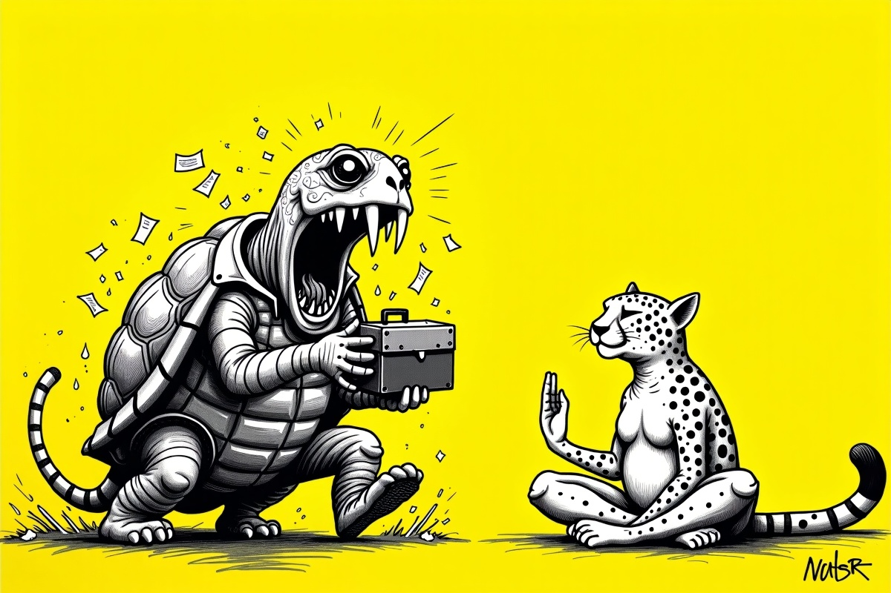

Yazılar
Seyir defteri
Derin konular, sade dil. Ve her yazının bir yerinde, o konuyu tatlıya bağlayan bir karikatür. İstersen sadece onlara bak.
Adı Çalınan Adam
Epikuros’un adı bugün bir lokanta tabelası; kendisi arpa ekmeğiyle yaşadı. “Haz” kelimesi iki bin yılda nasıl el değiştirdi, Stoacılarla kavgası neydi — ve tek kıyafetiyle yaşayan bir dost bana bütün bunları tek bir cümleyle nasıl anlattı?
Oku → Üçüncü yazıHer Şey Bir Tabak Makarnayla Başladı
Sakin yaşam aslında nereden çıktı? Bir felsefeyle değil; 1986 Roma'da bir McDonald's'a kızan Carlo Petrini'nin bir tabak makarnasıyla. Slow Food'un doğuşu, Cittaslow ve o meşhur salyangozun hikâyesi — hep bir sohbetten doğdu.
Oku → İkinci yazıİlk Durak: Stoacılar
Sakin yaşamı araştırırken karşıma ilk çıkan grup Stoacılar oldu. Kimler bunlar, ne savunuyorlar, hangi somut örneklerle — onlara ne itirazlar var, ve benim öngörüm ne?
Oku → İlk yazıSaniyede Milyar İşlem Yapan Bir Dünyada Nefes Almayı Hatırlamak
Hayatını teknolojiden kazanan biri, yapay zekânın hızına yetişemediğini fark ederse ne olur? Fiber optik kablolarla koşu yarışına girmiş bir dinozorun itirafları — ve makinenin fişini çekmenin sanatı.
Oku →
Defter yavaş yavaş doluyor. Acelemiz yok, biliyorsun.